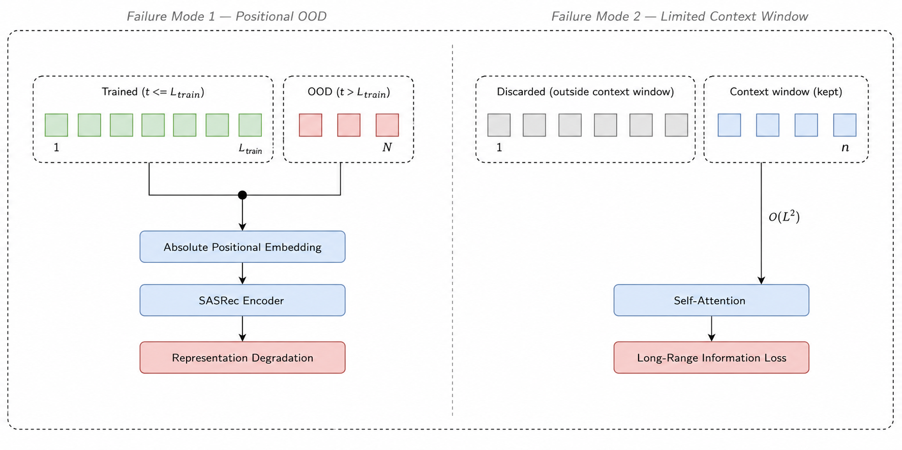
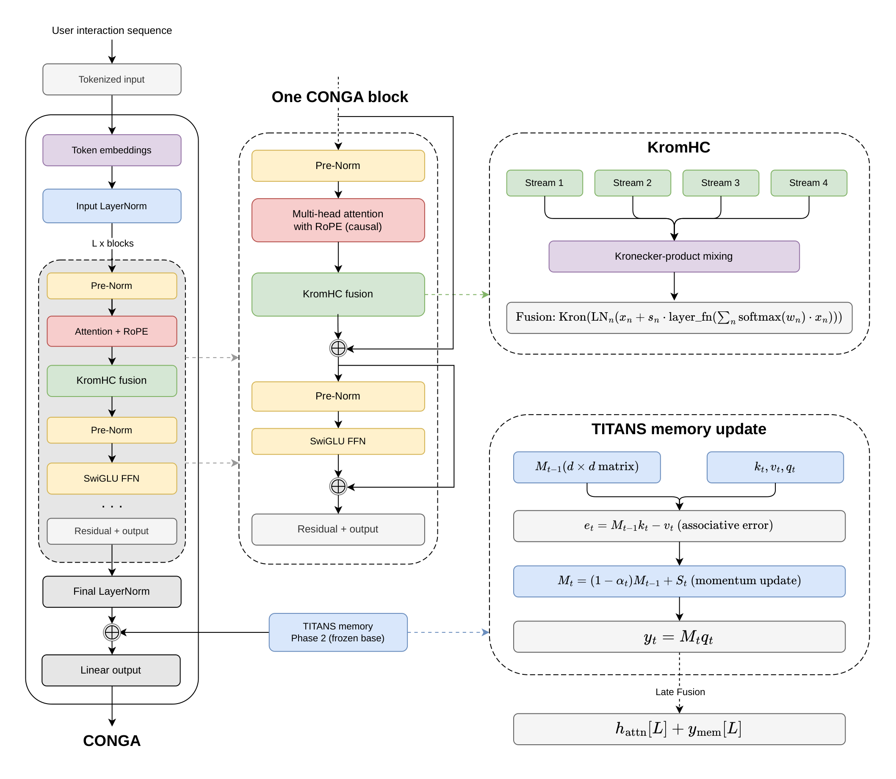
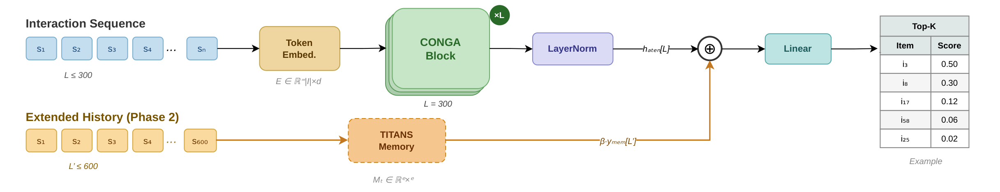
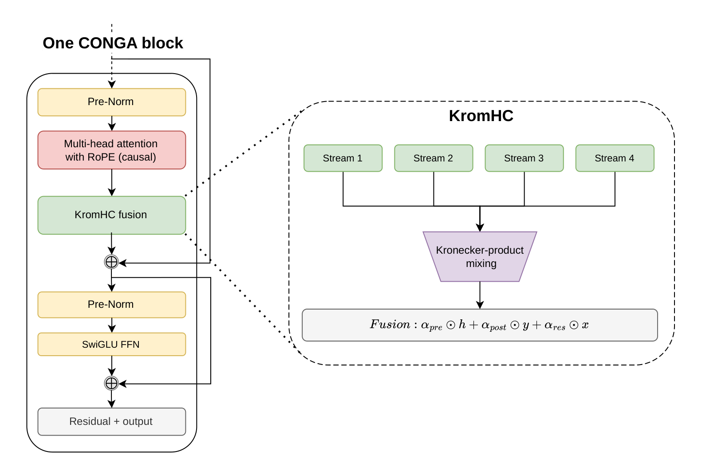
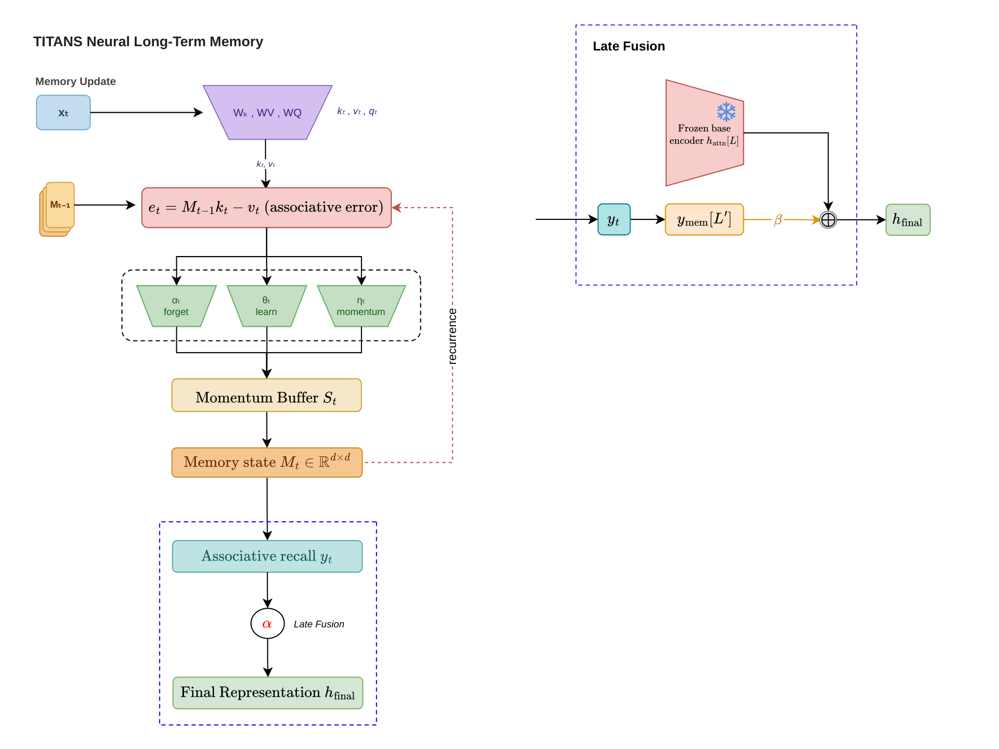
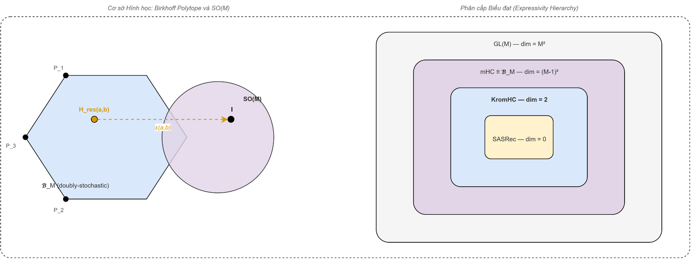

Abstract
Existing sequential recommendation models rely on absolute positional encodings and fixed context windows, producing two structural failure modes: out-of-distribution degradation on histories longer than the training window, and hard context limits that discard long-range interactions. We present CONGA (COntinual Neural Gated Architecture), which addresses these limitations through three contributions: (1) Rotary Positional Embeddings (RoPE) with a norm-preserving property for any sequence length, accelerated by custom CUDA kernels; (2) KromHC multi-stream fusion with exact doubly-stochastic mixing via Kronecker-product parametrization — where ablation confirms the expressivity gain arises from balanced gradient flow rather than additional parameters — together with a data-adaptive stream selection mechanism that prevents overfitting on sparse corpora; and (3) TITANS neural associative memory adapted to discrete-item recommendation, the first such proof-of-concept, via a two-phase training protocol with a structural forgetting-prevention property: the base encoder is frozen, preserving its short-sequence predictions, while Phase 2 only adds a learned memory term. Evaluated under a rigorous full-ranking protocol across four benchmarks (ML-1M, Beauty, Yelp, Steam), CONGA achieves state-of-the-art performance on long-history benchmarks, with gains up to +18.7% HR@5 on ML-1M — the densest, longest-history dataset where all three failure modes are simultaneously active — and consistent improvements on long-history benchmarks, with competitive results on short-history datasets where the RoPE backbone is the primary driver.
Motivation
SASRec-family models learn absolute position embeddings independently for each index, so any sequence exceeding the training window exposes out-of-distribution positions at test time — a structural defect on datasets like ML-1M, where histories reach 300–600 interactions. Standard attention also scales as O(L²) in sequence length, restricting practical context windows to 200–300 items and forcing a single residual stream to simultaneously capture short-term recency and long-term preference.

Method
C1 — RoPE. Replacing absolute positional embeddings with Rotary Positional Embeddings gives a norm-preserving property (‖ℛm‖F = √d for any sequence length), directly resolving the positional OOD failure mode. A fused CUDA kernel accelerates it 5.0× (forward) / 5.4× (backward) over the eager PyTorch implementation.
C2 — KromHC multi-stream fusion. Instead of a single residual stream, KromHC (implemented as MHCv2) mixes multiple parallel streams through an exact doubly-stochastic matrix built from a Kronecker product of 2×2 mixing blocks — guaranteeing the mixing never collapses to a degenerate projection. A data-adaptive rule sets the stream count from sequence density (more streams on dense/long-history corpora, fewer on sparse ones), preventing overfitting on short sequences.
C3 — TITANS two-phase memory. A neural associative memory extends the effective context window (e.g. 300 → 600 items). Phase 1 trains the base encoder; Phase 2 freezes the base encoder and trains only the memory module — a structural guarantee that short-sequence predictions are preserved while long-range retrieval is added on top.

Full CONGA architecture as presented in the paper: encoder stack, KromHC internals, and TITANS memory update.

End-to-end pipeline: modernized SASRec backbone with RoPE, KromHC, and SwiGLU, followed by two-phase TITANS training.

A single CONGA block: KromHC multi-stream fusion wraps the attention and feed-forward sublayers.

TITANS two-phase protocol: base encoder frozen in Phase 2, memory module trained on extended sequences.

KromHC's Kronecker-product mixing matrix is an exact vertex of the Birkhoff polytope of doubly-stochastic matrices.
Results
Evaluated under full-ranking (no negative sampling) against nine baselines, CONGA ranks first on 14 of 16 accuracy metrics:

Full comparison across all four benchmarks (bold = best, underline = second best, grey = a baseline retains the best score; Δ = relative gain of CONGA over the strongest baseline):
| Dataset | Metric | CaserWSDM'18 | GRU4RecICLR'16 | SASRecICDM'18 | BERT4RecCIKM'19 | FMLPRecWWW'22 | DuoRecWSDM'22 | FEARecSIGIR'23 | BSARecAAAI'24 | WEARecarXiv'25 | CONGAours | Δ |
|---|---|---|---|---|---|---|---|---|---|---|---|---|
| Beauty | HR@5 | 0.0125 | 0.0169 | 0.0340 | 0.0469 | 0.0346 | 0.0707 | 0.0706 | 0.0694 | 0.0691 | 0.0718 | +1.56% |
| HR@10 | 0.0225 | 0.0304 | 0.0531 | 0.0705 | 0.0559 | 0.0965 | 0.0982 | 0.0971 | 0.0948 | 0.0965 | -1.73% | |
| NDCG@5 | 0.0076 | 0.0104 | 0.0221 | 0.0311 | 0.0222 | 0.0501 | 0.0512 | 0.0495 | 0.0490 | 0.0515 | +0.59% | |
| NDCG@10 | 0.0108 | 0.0147 | 0.0283 | 0.0387 | 0.0291 | 0.0584 | 0.0601 | 0.0585 | 0.0573 | 0.0594 | -1.16% | |
| Yelp | HR@5 | 0.0117 | 0.0130 | 0.0149 | 0.0256 | 0.0159 | 0.0271 | 0.0262 | 0.0453 | 0.0492 | 0.0551 | +11.99% |
| HR@10 | 0.0197 | 0.0221 | 0.0249 | 0.0433 | 0.0287 | 0.0442 | 0.0437 | 0.0724 | 0.0781 | 0.0901 | +15.36% | |
| NDCG@5 | 0.0070 | 0.0080 | 0.0091 | 0.0159 | 0.0100 | 0.0170 | 0.0165 | 0.0293 | 0.0320 | 0.0355 | +10.94% | |
| NDCG@10 | 0.0096 | 0.0109 | 0.0123 | 0.0216 | 0.0142 | 0.0225 | 0.0221 | 0.0380 | 0.0412 | 0.0467 | +13.35% | |
| ML-1M | HR@5 | 0.0927 | 0.1005 | 0.1374 | 0.1512 | 0.1316 | 0.1838 | 0.1834 | 0.1944 | 0.2051 | 0.2435 | +18.72% |
| HR@10 | 0.1556 | 0.1657 | 0.2137 | 0.2346 | 0.2065 | 0.2704 | 0.2705 | 0.2757 | 0.2987 | 0.3402 | +13.89% | |
| NDCG@5 | 0.0592 | 0.0619 | 0.0873 | 0.1021 | 0.0846 | 0.1252 | 0.1236 | 0.1306 | 0.1393 | 0.1700 | +22.04% | |
| NDCG@10 | 0.0795 | 0.0828 | 0.1116 | 0.1289 | 0.1087 | 0.1530 | 0.1516 | 0.1568 | 0.1694 | 0.2012 | +18.77% | |
| Steam | HR@5 | 0.0304 | 0.0606 | 0.0683 | 0.0645 | 0.0464 | 0.0754 | 0.0701 | 0.0694 | 0.0700 | 0.0779 | +3.32% |
| HR@10 | 0.0533 | 0.1021 | 0.1105 | 0.1054 | 0.0772 | 0.1201 | 0.1108 | 0.1101 | 0.1101 | 0.1275 | +6.16% | |
| NDCG@5 | 0.0190 | 0.0380 | 0.0431 | 0.0417 | 0.0300 | 0.0503 | 0.0455 | 0.0455 | 0.0459 | 0.0513 | +1.99% | |
| NDCG@10 | 0.0263 | 0.0514 | 0.0567 | 0.0548 | 0.0398 | 0.0646 | 0.0584 | 0.0585 | 0.0588 | 0.0672 | +4.02% |
CUDA Kernels
Four components are accelerated with custom fused CUDA kernels (measured at B=128, L=300, float32, RTX 5090):
| Kernel | Forward speedup | Backward speedup |
|---|---|---|
| RoPE | 5.0× | 5.4× |
| SwiGLU | 3.9× | 3.5× |
| KromHC (MHCv2) | 5.2× | 4.8× |
| TITANS | 13.2× | 15.0× |
| Combined | 10.0× | 10.9× |
Ablation Study
Each row adds one component to the previous. A0 is a modernized SASRec encoder with RoPE only, isolating the incremental contribution of KromHC, SwiGLU, and TITANS:
| ID | Configuration | ML-1M HR@5 | ML-1M NDCG@10 | Yelp HR@5 | Yelp NDCG@10 |
|---|---|---|---|---|---|
| A0 | Base encoder (RoPE only) | 0.2434 | 0.1984 | 0.0554 | 0.0365 |
| A1 | A0 + KromHC | 0.2425 | 0.1988 | 0.0524 | 0.0433 |
| A2 | A1 + SwiGLU | 0.2432 | 0.2007 | 0.0534 | 0.0444 |
| A3 | A2 + TITANS (full CONGA) | 0.2435 | 0.2012 | 0.0551 | 0.0467 |
Robustness & Diversity
Diversity and robustness metrics on ML-1M (top-10). Repetition Rate is exactly 0.00% for both variants, confirming correct interaction-masking across all 6,040 × 10 recommendation slots:
| Metric | CONGA-base | CONGA-full | Δ |
|---|---|---|---|
| Coverage@10 | 74.68% | 74.80% | +0.12 pp |
| ILD (Intra-List Diversity) | 0.6528 | 0.6235 | -0.029 |
| Tail Ratio | 0.94% | 0.77% | -0.17 pp |
| Head Bias | 5.58% | 6.36% | +0.78 pp |
| Repetition Rate | 0.00% | 0.00% | ±0 |
Long-History User Analysis
NDCG@10 by user history length on ML-1M (6,040 users). The relative gain of TITANS grows monotonically with history length, directly validating the two-phase memory design:

| Group | Users | w/o TITANS | CONGA-full | Δ% |
|---|---|---|---|---|
| Short (≤50 items) | 1,837 | 0.2535 | 0.2536 | +0.04% |
| Medium (51–150 items) | 2,130 | 0.2024 | 0.2027 | +0.15% |
| Long (>150 items) | 2,073 | 0.1521 | 0.1532 | +0.72% |
| Overall | 6,040 | 0.2007 | 0.2012 | +0.25% |
BibTeX
@inproceedings{le2026conga,
title = {CONGA: Continual Neural Gated Architecture for Long-History Sequential Recommendation},
author = {Le, Hoang-Vu and Nguyen, Tuong-Bach-Hy and Le, Bac},
booktitle = {Proceedings of the ACM Conference on Recommender Systems (RecSys '26)},
year = {2026},
address = {Minneapolis, MN, USA},
publisher = {ACM}
}